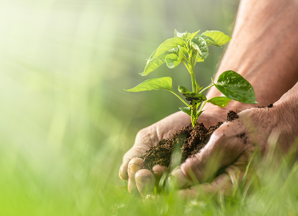

The association seeks to serve, promote and empower a sustainable community in which there is full respect and societal peace in all sectors especially the agricultural sector in order to take care of land and human life development especially for farmers. In addition, it seeks to cultivate rural areas to secure farmers’ essential needs autonomously and independently taking best advantage of human and natural resources to achieve food security thus empowering Palestinian economy.